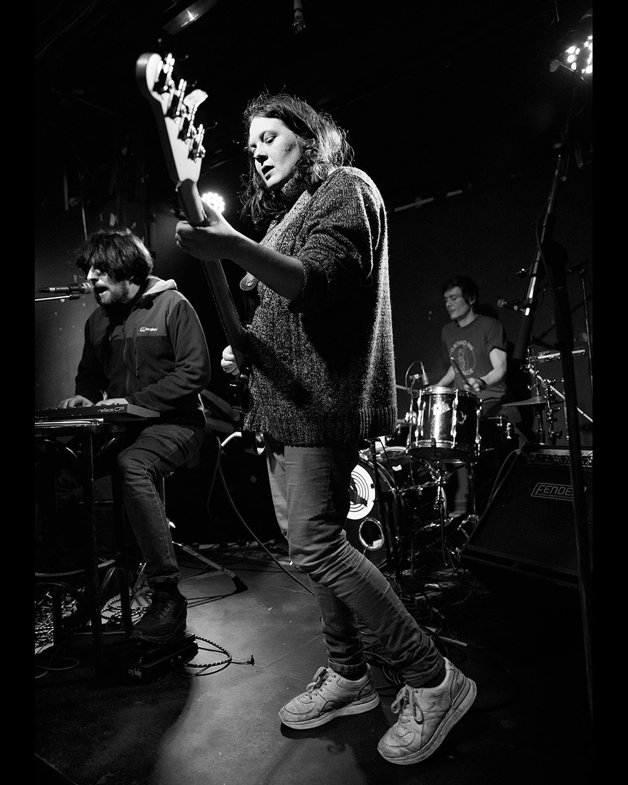
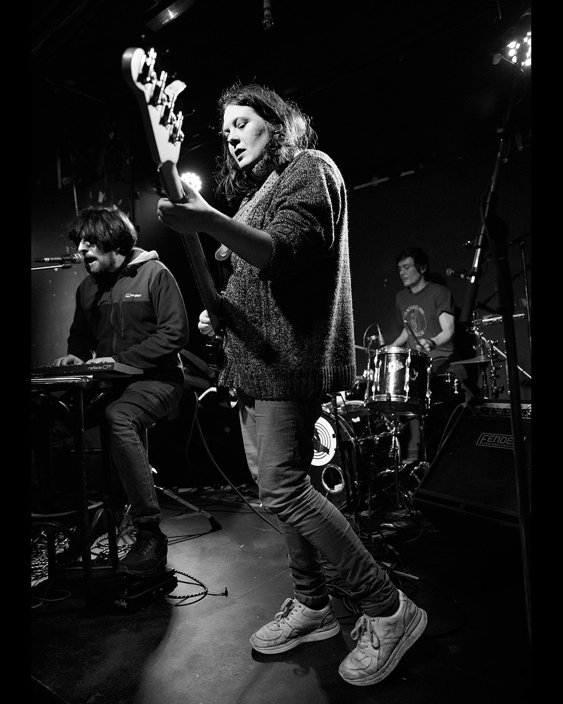

⠀⠀⢀⡠⠒⠈⠛⠊⠋⠑⠦⡄⠀⠀⠀⠀⠀⠀⠀⠀⠀⠀⠀⠀⠀⠀⠀⠀⠀⠀
⠀⠀⡎⠀⡀⠀⠀⠰⡀⠀⠐⣪⣦⡀⠀⠀⠀⠀⠀⠀⠀⠀⠀⠀⠀⠀⠀⠀⠀⠀
⠀⠀⡧⠀⠉⣓⠴⠊⠉⠉⢫⠀⠀⠉⣉⣲⠀⠀⠀⠀⠀⣄⠀⠴⠄⡀⡀⠀⠀⠀
⠀⢀⡿⠓⠊⠀⠠⠾⠟⠁⠘⡖⠐⠚⣇⣀⢀⣀⠤⠖⠒⠒⠠⢄⡀⠀⠈⠑⡄⠀
⣠⠯⠀⠀⠀⠀⠀⠀⠀⣠⠜⠀⠀⠀⢸⢆⠀⠈⠁⠀⠀⠀⠀⠀⠁⠀⠀⠀⠈⠄
⢷⡤⠂⢀⠀⠀⣀⡠⠔⠁⠀⠀⠀⠀⡜⢸⠀⠀⠀⠀⠀⠀⠀⠀⠀⠀⠀⠀⠀⠸
⠈⠻⠭⠶⠚⠛⡄⠀⠀⠀⠀⠀⠀⠈⠀⠸⠀⠀⠀⠀⠀⠀⠀⠀⠀⠀⠀⠀⠀⠀
⠀⠀⠀⠀⠀⠀⣵⠠⠤⠀⠀⠀⠀⡠⠔⠁⠀⠀⠀⠀⠀⠀⠀⠀⠀⠀⠀⠀⠀⢸
⠀⠀⠀⠀⠀⠀⠻⡤⠄⢀⡠⠄⠊⠀⠀⠀⠀⠀⠀⠀⠀⠀⠀⠀⠀⢀⢀⠀⠀⡸
⠀⠀⠀⠀⠀⠀⠀⢱⠖⠮⢄⠀⠀⠀⠀⠀⠀⠀⠀⠀⠀⢀⠀⠀⢀⠞⡞⠀⡀⡅
⠀⠀⠀⠀⠀⠀⠀⠈⣗⠂⠤⠀⠀⠀⠀⠀⠀⢀⠀⠤⡔⠁⠀⠀⡠⡾⠠⠮⡾⠀
⠀⠀⠀⠀⠀⠀⠀⠀⢱⡩⠁⢄⠀⠀⠀⣀⠄⠂⠀⡴⠓⢶⠚⢹⡇⡇⠀⢀⡷⠀
⠀⠀⠀⠀⠀⠀⠀⠀⠀⡗⠒⠀⣽⠉⠙⣦⠄⠀⣾⠁⠀⡼⠀⠈⡇⢹⠀⢸⠃⠀
⠀⠀⠀⠀⠀⠀⠀⠀⠀⢱⠀⠀⡿⠀⠀⢻⠀⠀⢯⠀⠀⡇⠀⢠⡇⢸⠀⠈⢇⠀
⠀⠀⠀⠀⠀⠀⠀⠀⠀⣸⠂⠀⡇⠀⠀⢸⡆⠀⣾⠀⠀⠓⠓⋋⠀⡏⢀⠀⡟⠀
⠀⠀⠀⠀⠀⠀⠀⠀⢠⡏⠀⢀⡿⠀⠀⢸⠇⠀⡏⠀⠀⠀⠀⠀⠈⠓⠚⠚⠁⠀
⠀⠀⠀⠀⠀⠀⠀⠀⢼⣰⣀⡼⠃⠀⢀⡞⠀⠀⣿⠀⠀⠀⠀⠀⠀⠀⠀⠀⠀⠀
⠀⠀⠀⠀⠀⠀⠀⠀⠀⠀⠀⠀⠀⠀⣞⣰⣀⡜⠁⠀⠀⠀⠀⠀⠀⠀⠀⠀⠀⠀
is it nature is nature
this funky feeling that funky beat
is it nature or is it nurture
the reason for this rhythm in my feet
is it nature or is it nurture
People are so angry in the street
is it nature or is it nurture
the reason people are voting with their feet
Don't be rude, don't be rude
is it nature or is it nurture
to criticise your mother's point of view
is it nature or is it nurture
to read beyond the headlines of the news
Part of me felt we done too much
Part of me felt we never done enough
Part of me felt we done too much
Part of me felt we never done enough
Dont be rude, don't be rude
Oh no what to do
i've gone and grown feelings for you
I'm gonna have to
water them now
keep them fed
pull the weeds from
From their bed
give them sunshine
give them shade
use a trowel
use a spade
aw man it's every day
put my shoes on
and it starts to rain
Let's see how it looks in an hour
it's not always
The shoots will find their way
It's not always
The shrubs will see the day
Oh no what to do
I've grown in love with you
People tell me
Because of my age
I should reign it in
I should pare it back
People tell me people tell me people tell me
To look out of the window
At what do you see
The war is still raging
There'll never be peace
D C G x 4
if we [D]don't come off the [C]gas that we [G]emit
and we [D]say we'll buy [C]carbon [G]offsets
is that [D]really us [C]playing our [G]part
is it [D]wise to [C]be so [G]smart
if we [D]don't [C]just stop [G]oil
the whole [D]sea's gang [C]come to the [G]boil
there'll be [D]mammals washed [C]up on our [G]shore
[D]children seeking [C]refuge at your [G]door
They'll be asking [D] why they only [C]getting their [G]bit
when we've [D]taken all the [C]sweetness [G]out of it
[F]if we don't stop [Em]ourselves
[F]we don't leave anybody [G]else
[D]the [C]chance to[G]
the [F]opportunity
[B]not [G]to
Em Bm
Em Bm Am
[twice through]
Oops nope we’ll that’s unfortch’
I forgot to pack the propane torch
Do you need a good bag from the bakery
Before telling us your tales of bravery
Stories of old from oh so many years ago
Isn’t hindsight a wonderful thing
when one has found one’s flow
The realms in which we are being
Sometimes seeing is believing
Yet, how can one quell this emotional swell?
Please pass the magic potion,
we can cancel out the spell
Only time will really tell
Could this be
The end of an era?
the moon lit a bed of freshly fell snow
my family slept and i ate soup by the stove
who's that knockin on ma door
out there's a young man in old man's clothes
claims he lives here and my love is his
i send him walking in the snow man
i can't sleep so i go back outside
where did he come from, which way did he go
there are no footprints in the snow
I feel (C) so lazy (F) doctor can you (G) diagnose (C) why
I'll sing (C) anything I (F) got til it (G) gets me a (C)line
I feel (C) so crazy (F) lately are you (G) loving me (C) why
I'll do (C) anything (F) for you papa (G) you gave me my (C)life
(Em) oh my (C) God I (Bm) am so (C) tired
(Em) even (C) though I have (G) slept for 12 (Bm) hours
(Em) often (C) that is (Bm) just what (C) happens
(Em) you over- (C) -sleep and it (G) makes you more (Bm) tired
(Em) you over- (C) -sleep and it (Bm) makes you more (C) tired
Jesus christ I am so hungry
Gonna go home now I've spent all my money
You've got to get in to the groove
That's the whole point of this song
This song is so groovy
They're making it in to a movie
So when I die
There will be stars
In the sky
When I die
You've got to get in to the groove
It's all my fault
I took the decision
It's all because of me
It's my responsibility
I need some inspiration
to make a meal
Is there any point though
When all you want's a pie

 
